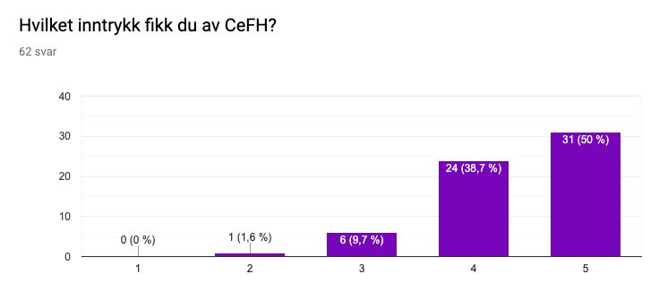
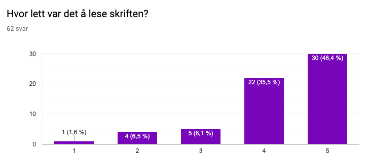
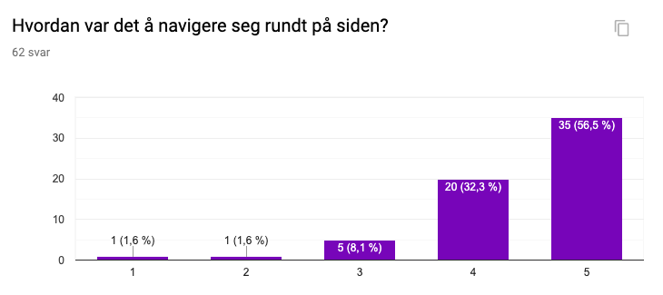

Authors: Kristin Håberg, Oda Hansen, Kari Stam Faugstad, Emil Brevik and Rikke Skindlo.
Date: 10th of November 2019
Name of client: Siri Eldevik Håberg
Position: Deputive Director, Center of Fertility and Health
All group members posted a questionnaire on their Facebook-page for our aquaintances to answer. The questions are adressing the sites professionalism, how hard/easy it is to navigate on the page, and how it is to access information on the page. It also adressed the age of the test-subjects, which type of unit they tested the site on and which of the functions they tested.
Link to the questionnaire.To get feedback on our website, we sent out a questionnaire and conducted observations, which gave us valuable insight. From the questionnaire we received 62 answers, 84 % being from the age group 19-30, 7 % from the age group 51-65, 5 % from the age group 65 plus, and 4 % from the age group 0-18. To get a better understanding of how the page worked for the target group, mainly being 30-60, we also carried out five observations. Three of them were scientists, two of them being from CeFH. The remaining three were made on other people within the target group. This gave us a more detailed feedback, as well as backing up the information learned from the questionnaire.
In the questionnaire, we had 62 participants. 5% of them used tablet, 39% used a PC or mac, and the remaining 56% used their mobile phone. Our clients used their computer, and other test results that we reached out to for the sake of our user-grups used their computer.
The questionnaire helped us address different aspects of how the site looked and worked.
Regarding the design, we asked the following questions in our questionnaire:
- Which impression did you get from CeFH? With a ranging from 1-5, from "not professional" to "professional"

The picture shows that 50% of the answers gave us the highest score, and no one gave us the lowest. This means that we succeeded to provide a professional website.
- How easy was it to read the text on the site? ranging from "difficult" to "easy".

From these results, we can see that the text is quite readable.
Both our clients were quite happy with the design and how it looked with the colors. It was nice that it was obvious that it was their site, and not an under-site of NIPH, as it used to be. We got some comments about the pictures on the site, but they understood why we had them when we explained that they were placeholders.
In the observation from our clients it was obvious that all of them understood how to navigate trough the navbar, and all of them managed to easily access the information they were looking for.
First of all, we all agree this was a very fun project. It has been a cool experience for us design students to make something that really works, and not only mockups in Figma. Working together on a digital platform, GitHub, has also been a good learning experience. It was hard at first, but once we got the hang of it, there was no return. Making all design decisions before coding was an additional challenge, especially since our team consists of five design students. But it proved to be a smart move, preventing many discussions down the road. Working with CeFH and having continuous contact with them was a good experience too, giving us the feel of a real life work situation.